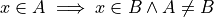
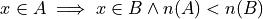

Set Theory#
Preliminaries#
Logic#
In order to develop the theory of sets precisely, we will first need a few concepts from logic.
- Proposition

A sentence that can be judged either true or false.
- Implication

- A symbolic representation of a conditional relationship between two propositions. This type of proposition can be translated into English in the following ways,
“if p, then q”
“whenever p, then q”
“p implies q”
“q follows from p”
- Universal Quantification

- A symbolic representation of a universal proposition. This type of proposition can be translated into English in the following ways,
“for all p, q”
“for every p, q”
“for each p, q”
Definitions#
- Domain of Discourse
The domain of discourse is subject matter we are treating.
- Elements
 (lowercase letters)
(lowercase letters) (lowercase letters with subscripts)
(lowercase letters with subscripts)TODO
- Sets
 (upper case letters)
(upper case letters) (uppercase letters with subscripts)
(uppercase letters with subscripts)TODO
- Cardinality

The number of elements in a set.
- Universal Set

The universal set S is set of all elements in the domain of discourse.
- Null Set

Notation#
- List Notation
TODO
- Quantifier Notation
TODO
Corollaries#

The number of elements in the null set (the cardinality of the null set) is 0.

Nothing belongs to the null set

Everything belongs to the unverisal set
Venn Diagrams#
TODO
Relations#
- Subset

All of A’s elements are contained in B. To say the same thing in a different way, if the element x belongs to A, then the element x also belongs to B

- Proper Subset

A is a subset of B and
 . To say the same thing in a different way, A is wholly contained in B.
. To say the same thing in a different way, A is wholly contained in B.
An equivalent way of defining a proper subset is given by,

This is an equivalent formulation between saying the cardinality of A is less than the cardinality of B is logically equivalent to saying A is no the same as B.
Operations#
- Complement


- Union

- Intersection
- math
A cap B
Theorems#
TODO